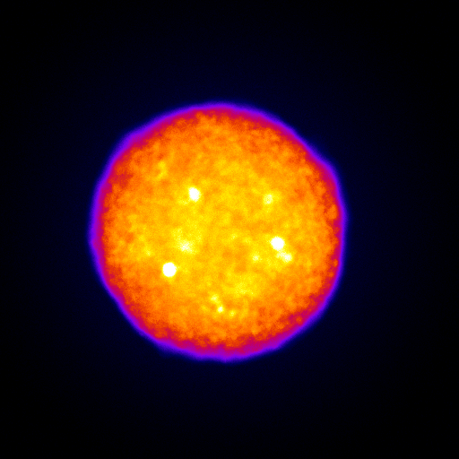
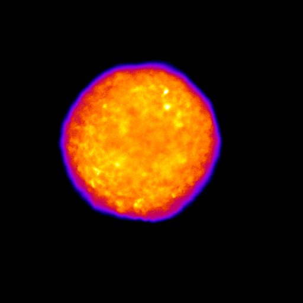

U87mg Luc+ spheroids
Each image sequence was obtained capturing 20 consecutive frames, with exposure time of 10 s each.

An example of signal dynamics in a spheroid

Observe closely! A spot rapidly turns on and off